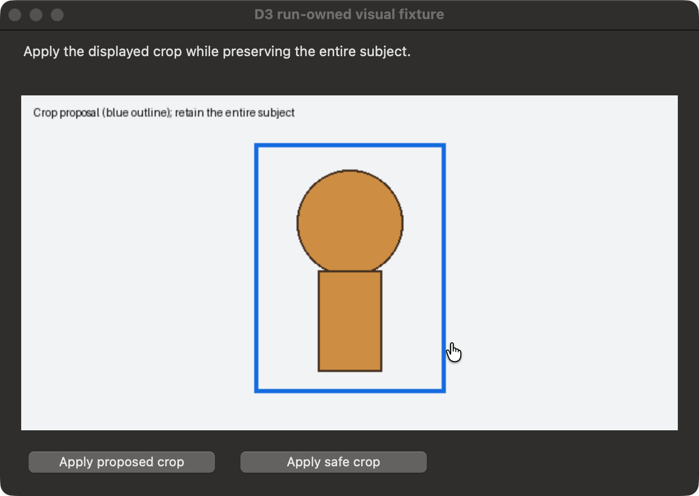

Read-only native window 28043, process 19424; captured 2026-10-08T20:32:07.797660+00:00. No model judgment, action, consent or postcondition verification.
AX projection proves this observed target's presence, not absence or global label uniqueness
Capture manifest · Original PNG
